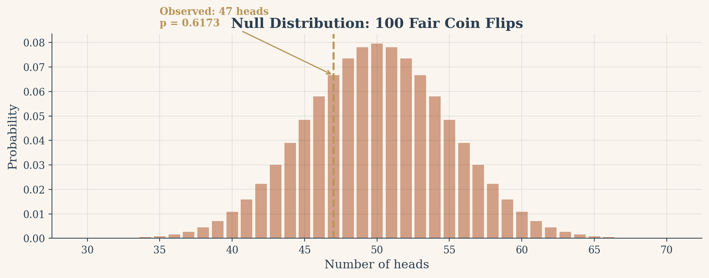
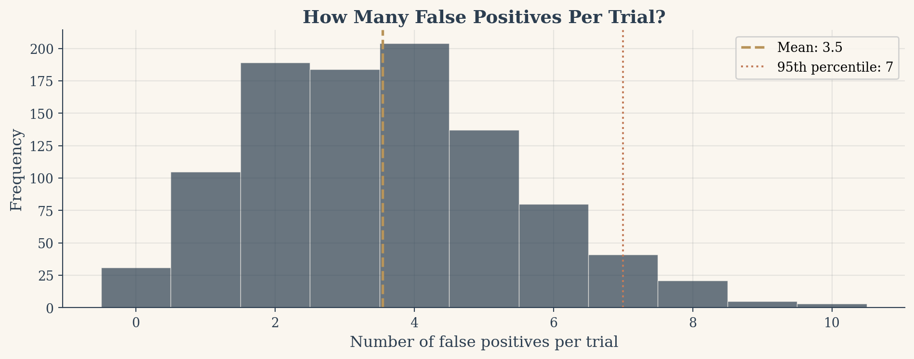
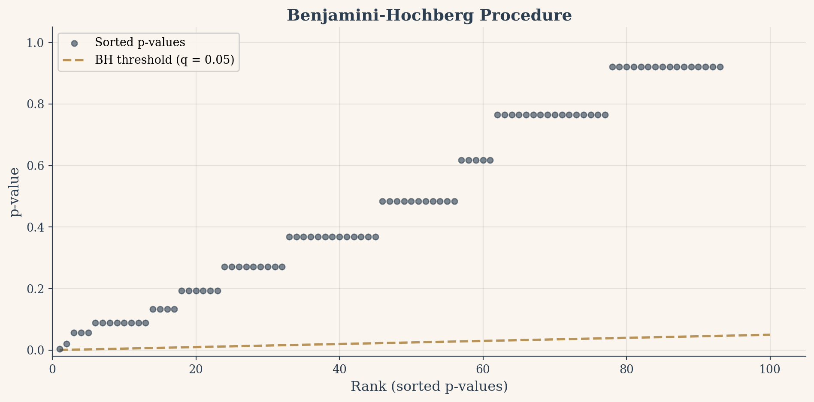

In 2011, psychologist Daryl Bem published a paper claiming that humans could sense future events. Nine studies, eight significant. The paper sailed through peer review at a top journal. But when other researchers looked closely, the problem was not the data. It was the sheer number of tests Bem had run across his studies, selectively reporting the ones that happened to cross the significance threshold. This was not fraud. It was a textbook case of multiple testing gone uncorrected.
The replication crisis that followed shook psychology, medicine, and genomics. At its root was a deceptively simple arithmetic problem: if you run enough tests at the 5% level, you are guaranteed to find something, even when nothing is there. Modern A/B testing platforms run thousands of experiments per quarter. Gene expression studies scan 20,000 genes simultaneously. Clinical trials compare a drug across dozens of endpoints. In every one of these settings, the naive 5% threshold is a trap. Understanding how to correct for it is not optional. It is the difference between discovery and self-deception.
What a p-value actually means
A p-value is a measure of surprise. You start with a boring assumption, the null hypothesis, and ask: “If this boring assumption were true, how likely is it that I would see data at least this extreme?” When the answer is very unlikely (say, less than 5%), you reject the null and declare significance.
Take a concrete example. You flip a coin 100 times and get 47 heads. Is the coin fair? The null hypothesis says yes: \(p = 0.5\). The p-value is the probability of seeing a result at least as far from 50 as your observed 47 (so 47 or fewer, or 53 or more) assuming the coin really is fair. Under the null, the number of heads follows a binomial distribution centered at 50. Most outcomes cluster near the middle. Extreme outcomes (say, 35 heads or 65 heads) are rare.
The 5% threshold (\(\alpha = 0.05\)) means you accept a 5% chance of being wrong when the null is true. If the coin really is fair, there is still a 5% chance your test will incorrectly reject it. This is a Type I error, a false positive, a false alarm. One in twenty. For a single test, that trade feels reasonable.
But “one in twenty” is not zero. And when you run more than one test, the small chances start to stack.
Show the simulation code
import numpy as npimport matplotlib.pyplot as pltimport matplotlibfrom scipy import statsfrom scipy.stats import binommatplotlib.rcParams['font.family'] ='serif'matplotlib.rcParams['axes.facecolor'] ='#faf6ef'matplotlib.rcParams['figure.facecolor'] ='#faf6ef'matplotlib.rcParams['axes.edgecolor'] ='#2c3e50'matplotlib.rcParams['axes.labelcolor'] ='#2c3e50'matplotlib.rcParams['xtick.color'] ='#2c3e50'matplotlib.rcParams['ytick.color'] ='#2c3e50'np.random.seed(42)flips = np.random.binomial(1, 0.5, size=100)heads = flips.sum()result = stats.binomtest(heads, 100, 0.5, alternative='two-sided')x = np.arange(30, 71)pmf = binom.pmf(x, 100, 0.5)fig, ax = plt.subplots(figsize=(8, 3.5))colors = ['#c27c5a'if (v <=100- heads or v >= heads) and heads <50else'#c27c5a'if (v >= heads or v <=100- heads) and heads >=50else'#2c3e50'for v in x]ax.bar(x, pmf, color=colors, alpha=0.7, width=0.8, edgecolor='none')ax.axvline(x=heads, color='#b8945a', linewidth=2, linestyle='--')ax.annotate(f'Observed: {heads} heads\np = {result.pvalue:.4f}', xy=(heads, binom.pmf(heads, 100, 0.5)), xytext=(heads -12, binom.pmf(heads, 100, 0.5) +0.02), fontsize=10, color='#b8945a', fontweight='bold', arrowprops=dict(arrowstyle='->', color='#b8945a', lw=1.2))ax.set_xlabel('Number of heads', fontsize=12)ax.set_ylabel('Probability', fontsize=12)ax.set_title('Null Distribution: 100 Fair Coin Flips', fontsize=14, color='#2c3e50', fontweight='bold')ax.grid(True, alpha=0.1, color='#2c3e50')ax.spines['top'].set_visible(False)ax.spines['right'].set_visible(False)fig.tight_layout()plt.show()print(f"\nHeads: {heads}, p-value: {result.pvalue:.4f}")print(f"At alpha = 0.05, we {'reject'if result.pvalue <0.05else'fail to reject'} the null hypothesis.")

Figure 1: Null distribution of heads in 100 fair coin flips. The observed value of 47 falls well within the expected range.
Heads: 47, p-value: 0.6173
At alpha = 0.05, we fail to reject the null hypothesis.
The chart above shows this null distribution. The orange regions in the tails represent outcomes extreme enough to trigger a false positive. Our observed 47 heads sits comfortably in the main body of the distribution. The p-value is large, and we correctly fail to reject the null. The coin is probably fair.
The trap, in numbers
Now imagine you have 100 perfectly fair coins. You test each one individually at the 5% level. Each test has a 5% chance of a false positive. The probability that none of them produce a false positive is \((1 - 0.05)^{100} = 0.0059\). Flip that around: the probability that at least one test produces a false positive is \(1 - (1 - 0.05)^{100} \approx 0.994\). Ninety-nine point four percent.
You are virtually guaranteed to “discover” something, even though nothing is there.
This is the family-wise error rate (FWER): the probability of making at least one Type I error across all your tests. With \(m\) independent tests at significance level \(\alpha\), the FWER is:
\[\text{FWER} = 1 - (1 - \alpha)^m\]
The formula reveals why the problem grows so fast. Each test that passes without a false positive multiplies the survival probability by 0.95. After a few dozen tests, that compounding shrinks the survival probability to nearly zero. By 20 tests you are at 64%. By 50 tests, 92%. By 100, it is a near certainty.
The simulation below runs this experiment 1,000 times to confirm the math empirically.
Figure 2: FWER grows rapidly with the number of tests. At 100 tests, a false positive is virtually guaranteed.
Average false positives per 100 fair-coin tests: 3.55
Simulations with at least one false positive: 96.9%
Visualizing the trap
The FWER curve tells us that at least one false positive is almost certain. But how many false positives should we expect? On average, 5% of 100 tests will be false positives, so about 5 per trial. But averages can be misleading. The histogram below shows the full distribution of false positive counts across 1,000 simulated trials of 100 fair tests each.
Show the histogram code
fig, ax = plt.subplots(figsize=(8, 3.5))bins = np.arange(-0.5, max(fp_counts) +1.5, 1)ax.hist(fp_counts, bins=bins, color='#2c3e50', alpha=0.7, edgecolor='#faf6ef', linewidth=0.5)ax.axvline(x=fp_counts.mean(), color='#b8945a', linewidth=2, linestyle='--', label=f'Mean: {fp_counts.mean():.1f}')ax.axvline(x=np.percentile(fp_counts, 95), color='#c27c5a', linewidth=1.5, linestyle=':', label=f'95th percentile: {np.percentile(fp_counts, 95):.0f}')ax.set_xlabel('Number of false positives per trial', fontsize=12)ax.set_ylabel('Frequency', fontsize=12)ax.set_title('How Many False Positives Per Trial?', fontsize=14, color='#2c3e50', fontweight='bold')ax.legend(fontsize=10, framealpha=0.9)ax.grid(True, alpha=0.1, color='#2c3e50')ax.spines['top'].set_visible(False)ax.spines['right'].set_visible(False)fig.tight_layout()plt.show()print(f"Min false positives: {fp_counts.min()}")print(f"Max false positives: {fp_counts.max()}")print(f"Trials with 0 false positives: {(fp_counts ==0).sum()} out of {n_sims}")

Figure 3: Distribution of false positive counts across 1,000 simulations of 100 fair-coin tests.
Min false positives: 0
Max false positives: 10
Trials with 0 false positives: 31 out of 1000
The distribution is centered near 5 but spreads from 0 to over 10 in some trials. In a handful of simulations, you get zero false positives. In others, you get a dozen. The point is that any single trial can mislead you, and the more tests you run, the wider the range of possible false alarms.
Bonferroni: the strict answer
The Bonferroni correction is the oldest and simplest fix. Instead of testing each hypothesis at \(\alpha = 0.05\), you test at \(\alpha / m\), where \(m\) is the number of tests. With 100 tests, the new threshold becomes \(0.05 / 100 = 0.0005\).
The intuition is elegant. You have a total error budget of 5%. You spread it equally across all \(m\) tests. Each test gets only \(\alpha / m\) of the budget. By the union bound, the probability that any test exceeds its share is at most \(m \cdot (\alpha / m) = \alpha\). The FWER stays controlled.
The cost is power. When you make the threshold 100 times stricter, subtle real effects cannot clear the bar. In the theater above, we saw 20 true effects but Bonferroni only caught 3. That is the price of certainty: you protect against every false alarm, but you also silence most of the truth.
Show the Bonferroni simulation
np.random.seed(42)heads_all = np.random.binomial(100, 0.5, size=100)left_all = binom.cdf(heads_all, 100, 0.5)right_all =1- binom.cdf(heads_all -1, 100, 0.5)p_values =2* np.minimum(left_all, right_all)alpha =0.05m =len(p_values)bonf_thresh = alpha / mbonf_reject =sum(1for p in p_values if p < bonf_thresh)print(f"Bonferroni threshold: {bonf_thresh:.6f}")print(f"Rejected: {bonf_reject} out of {m}")print(f"Smallest p-value: {min(p_values):.6f}")
Bonferroni threshold: 0.000500
Rejected: 0 out of 100
Smallest p-value: 0.003518
Holm: a smarter step-down
The Holm-Bonferroni method (1979) is a strictly more powerful alternative to Bonferroni that still controls the FWER. The idea: not every test needs to clear the same bar. If the smallest p-value is clearly significant, the second-smallest does not need to be held to quite as strict a standard.
The procedure sorts p-values from smallest to largest and compares each to a progressively relaxed threshold. The \(k\)-th smallest p-value is compared to \(\alpha / (m - k + 1)\). The first comparison uses \(\alpha / m\) (same as Bonferroni). But the second uses \(\alpha / (m - 1)\), the third \(\alpha / (m - 2)\), and so on. You reject hypotheses sequentially until the first p-value that fails its threshold, then stop.
This step-down approach is uniformly more powerful than Bonferroni: anything Bonferroni rejects, Holm also rejects, and sometimes Holm catches a few more.
Figure 4: Holm-Bonferroni uses a rising threshold (step-down) that catches more true effects than the flat Bonferroni line.
Bonferroni rejected: 0
Holm rejected: 0
Benjamini-Hochberg: a different goal
Every method so far has tried to control the FWER: the probability of making any false positive at all. Benjamini and Hochberg (1995) asked a different question. Instead of demanding zero false alarms, what if we accept a controlled proportion of false alarms among our discoveries?
This is the false discovery rate (FDR): among all hypotheses you reject, what fraction are actually null? FWER asks, “Did I make any mistakes?” FDR asks, “What percentage of my discoveries are mistakes?” When you are screening thousands of genes or running hundreds of marketing experiments, the second question is often more practical.
The BH procedure works in four steps. Sort all \(m\) p-values from smallest to largest: \(p_{(1)} \leq p_{(2)} \leq \dots \leq p_{(m)}\). For each p-value at rank \(k\), compute its threshold: \(k \cdot q / m\), where \(q\) is the desired FDR level (typically 0.05). Find the largest rank \(k\) where \(p_{(k)} \leq k \cdot q / m\). Reject all hypotheses at ranks 1 through \(k\).
The threshold line rises linearly. Early p-values must beat a strict bar, but later p-values get progressively more room. This rising threshold adapts to the density of signals in your data. When many tests are significant (a strong signal), BH lets more through. When few are, it becomes nearly as strict as Bonferroni.
Show the BH implementation
def benjamini_hochberg(p_vals, q=0.05): p_array = np.array(p_vals) m =len(p_array) sorted_idx = np.argsort(p_array) sorted_p = p_array[sorted_idx] thresholds = np.arange(1, m +1) * q / m below = sorted_p <= thresholdsifnot below.any():return [] k = np.where(below)[0].max()returnlist(sorted_idx[:k +1])bh_reject = benjamini_hochberg(p_values)sorted_p_bh = np.sort(p_values)bh_thresh = np.arange(1, m +1) *0.05/ mfig, ax = plt.subplots(figsize=(8, 4))ax.scatter(ranks, sorted_p_bh, c='#2c3e50', s=25, alpha=0.6, zorder=3, label='Sorted p-values')ax.plot(ranks, bh_thresh, color='#b8945a', linewidth=2, linestyle='--', label='BH threshold (q = 0.05)')iflen(bh_reject) >0: cutoff_rank =len(bh_reject) ax.axvline(x=cutoff_rank, color='#c27c5a', linewidth=1.5, linestyle=':', alpha=0.7) ax.fill_between(ranks[:cutoff_rank], 0, sorted_p_bh[:cutoff_rank], color='#2c3e50', alpha=0.08) ax.annotate(f'Reject ranks 1 to {cutoff_rank}', xy=(cutoff_rank, sorted_p_bh[cutoff_rank-1]), fontsize=10, color='#c27c5a', fontweight='bold', xytext=(cutoff_rank +5, sorted_p_bh[cutoff_rank-1] +0.05), arrowprops=dict(arrowstyle='->', color='#c27c5a', lw=1.2))ax.set_xlabel('Rank (sorted p-values)', fontsize=12)ax.set_ylabel('p-value', fontsize=12)ax.set_title('Benjamini-Hochberg Procedure', fontsize=14, color='#2c3e50', fontweight='bold')ax.legend(fontsize=10, framealpha=0.9)ax.set_xlim(0, m +5)ax.set_ylim(-0.02, 1.05)ax.grid(True, alpha=0.1, color='#2c3e50')ax.spines['top'].set_visible(False)ax.spines['right'].set_visible(False)fig.tight_layout()plt.show()print(f"BH rejected: {len(bh_reject)} out of {m}")print(f"Holm rejected: {len(holm_reject)} out of {m}")print(f"Bonferroni rejected: {bonf_reject} out of {m}")

Figure 5: The BH procedure: sorted p-values against a rising threshold line. Everything below the line is rejected.
BH rejected: 0 out of 100
Holm rejected: 0 out of 100
Bonferroni rejected: 0 out of 100
Power: what each method costs
The trade-off between false positives and detection power only becomes visible when real effects are present. The simulation below creates 100 tests where 20 are genuinely biased coins (probability of heads = 0.65) and 80 are fair. We then apply each correction method and measure how many of the 20 true effects each one detects.
The right correction depends on two questions. First, how catastrophic is a false positive? In a clinical trial where a false positive means giving patients an ineffective drug, even one mistake is unacceptable. Use Bonferroni or Holm. In an exploratory gene study where false positives will be filtered by downstream experiments, a controlled rate of false discoveries is fine. Use BH.
Second, how many real effects do you expect? When most hypotheses are null and you are looking for a needle in a haystack, strict FWER control is appropriate. When you expect many real effects (as in differential expression studies), BH preserves power where it matters most.
Holm dominates Bonferroni in all cases, so there is rarely a reason to prefer Bonferroni unless simplicity of explanation is your primary concern. BH is the default in most modern large-scale testing pipelines. But none of these methods replace scientific judgment. They are guardrails, not autopilots.
A closing reflection
The whole field of multiple testing correction exists because our tools were never as certain as they seemed. Run enough tests and the guarantees break down. The corrections do not add certainty. They add honesty: a willingness to ask “how many of my discoveries might be wrong?” before declaring victory.
That question, uncomfortable as it is, separates careful analysis from noise dressed up as insight. Bonferroni, Holm, and Benjamini-Hochberg are three different calibrations of the same humility. The important thing is not which one you choose. It is that you choose to ask at all.